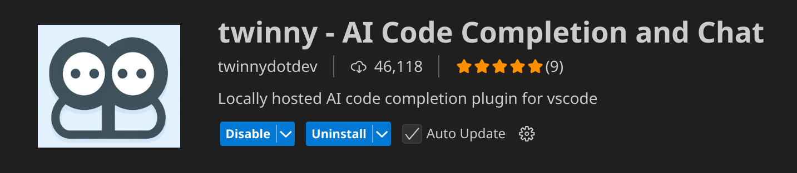
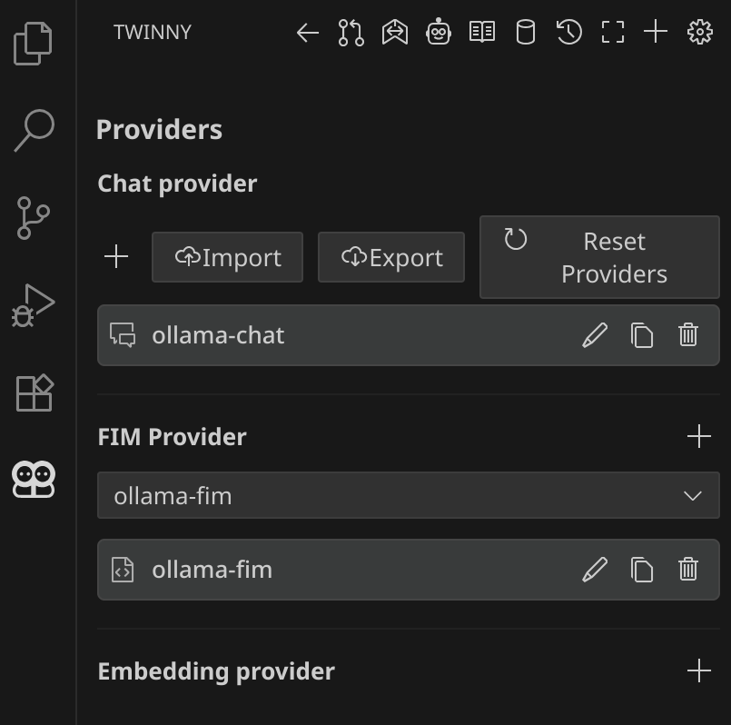
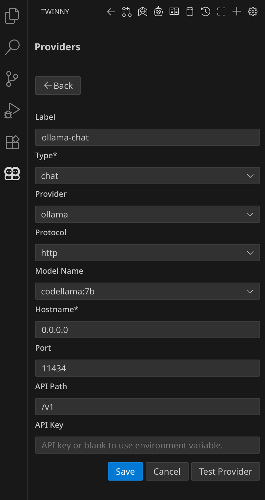
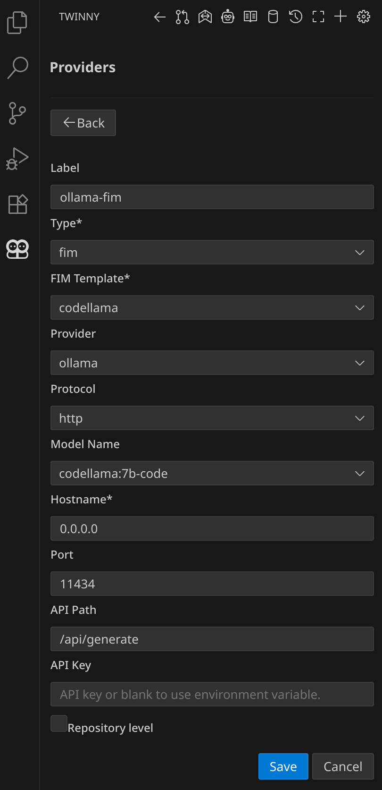
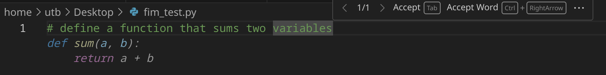
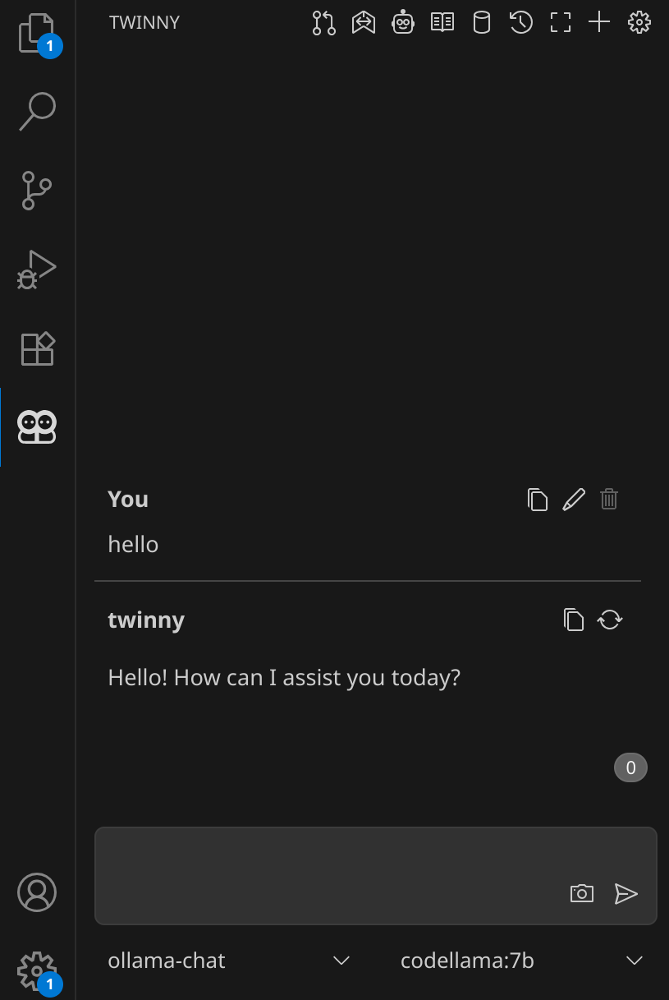

Session 8: Notes on Local AI Code Assistance and Selfhosting an Email Server
Table of Contents
- 1. Integrating a Local AI Model in VSCode
- 2. A Somewhat Basic Tutorial on Setting up a Web and Email Server
- 2.1. Warning!!!
- 2.2. For the reader
- 2.3. Get a domain name
- 2.4. Find a machine
- 2.5. Set DNS host records (epik)
- 2.6. ssh into
root@---.net - 2.7. Preliminaries
- 2.8. Reverse DNS record (vultr)
- 2.9. Installation of packages
- 2.10. Configuration
- 2.11. Getting https
- 2.12. Setting up the mail server
- 2.13. Putting text records
- 2.14. Add user
1. Integrating a Local AI Model in VSCode
1.1. Preliminaries
Install the below packages
- VSCode
- docker
- twinny extension
Docker containers are similar to virtual machines, but lighter on system resources, and specifically provide the dependencies for the distributed software. Ollama server is the software we are going to use inside a container.
Before running a container, it is feasible to create a shared folder in the host's filesystem. The shared folder enables us to link the host's and container's filesystems over itself. So, we could exchange model files with the container.
Let's create a shared folder,
mkdir ~/models
1.2. Running the Ollama Server
We need to run the docker container in the background. For once execute the command below,
sudo docker run -d -v ~/models:/root/models -p 11434:11434 --name oscmw-ollama ollama/ollama
where
-d: runs the container in background and print the container ID-v: binds mount the volume-p: publishes the container's port to the host--name: assigns the name to the containerollama/ollama: the image name
If ollama/ollama image hasn't been downloaded before, it will be downloaded.
Now, we can check running containers by
sudo docker ps -a
We should see something like this,
CONTAINER ID IMAGE COMMAND CREATED STATUS PORTS NAMES 58c9cf508d0d ollama/ollama "/bin/ollama serve" 2 minutes ago Up 2 minutes 0.0.0.0:11434->11434/tcp, [::]:11434->11434/tcp oscmw-ollama
The container has been successfully up and running about two minutes. Notice the COMMAND column where it says "/bin/ollama serve". The container is actually default to running ollama in the serve (server) mode. Therefore, ollama server is running, and can be accessed through the port.
In order to download LLM models using ollama binaries, we need to access the shell of the container. Let's issue the command in host machine,
sudo docker exec -it oscmw-ollama /bin/bash
which executes /bin/bash program inside the container, and the result should be a shell prompt where we are seen as the root user,
root@58c9cf508d0d:/#
If we go to /root (models), the shared folder can be seen in the container,
root@58c9cf508d0d:/# cd /root/ root@58c9cf508d0d:~# ll total 8 drwx------ 1 root root 72 Sep 14 11:15 ./ drwxr-xr-x 1 root root 8 Sep 14 11:15 ../ -rw-r--r-- 1 root root 3106 Apr 22 2024 .bashrc drwxr-xr-x 1 root root 60 Sep 14 11:15 .ollama/ -rw-r--r-- 1 root root 161 Apr 22 2024 .profile drwxr-xr-x 1 ubuntu ubuntu 0 Sep 14 10:17 models/
Now, we need specifically chat, and FIM (fill-in-the-middle) capable models which are going to be run in the server. https://ollama.com/search helps us to browse the models. In this tutorial we could consider 7-billion parameter codellama models. They are
- codellama:7b
- codellama:7b-code
which are used for chat, and FIM, respectively.
We pull the models one by one (wait for the first pull to finish then pull the other model),
root@58c9cf508d0d:~# ollama pull codellama:7b-code root@58c9cf508d0d:~# ollama pull codellama:7b
We check the downloaded models,
root@58c9cf508d0d:~# ollama list NAME ID SIZE MODIFIED codellama:7b-code 8df0a30bb1e6 3.8 GB 9 days ago codellama:7b 8fdf8f752f6e 3.8 GB 9 days ago
1.3. Editor Setup
Install twinny in VSCode extensions,

Once it is installed let's click on the robot head in twinny's dash. We will add new providers such that it will look like this,

The configurations for chat, and fim providers are shown, respectively,


Restart VSCode and open a test file called fim_test.py. Write a simple problem definition as a comment,

Type something in the chat window as well,

It works!
1.4. Tips
1.5. Converting GGUF Files to Ollama Models
The local GGUF file should be moved to the shared folder first. Then, follow https://github.com/ollama/ollama#import-from-gguf.
Note that the Modelfile should be created inside the shared folder.
1.6. Model Memory Timeout
Search for Twinny: Keep Alive in VSCode settings. You may change it according to your preference.
1.7. Toggle Completion
You might use Alt+\ combination to send your FIM request to the server. Uncheck Twinny: Auto Suggest Enabled in VSCode settings.
2. A Somewhat Basic Tutorial on Setting up a Web and Email Server
2.1. Warning!!!
Original tutorial is https://www.youtube.com/watch?v=3dIVesHEAzc. All the content here is all written notes based on the link given. This written tutorial has no responsibility of any damage, and risk. Use it with your own responsibility.
2.2. For the reader
For example if your domain is dummy.net, replace --- or landchad with dummy in all examples.
2.3. Get a domain name
- epik
2.4. Find a machine
- vultr
- enable IPv6
- server hostname & label:
---.net(obtained from epik)
2.5. Set DNS host records (epik)
- copy the IP address from vultr
- go to External Hosts (A, AAAA) records
- delete all stuff there
- add a record
- leave Host blank, paste the IP address in Points to
- add a record
- put www in Host, paste the IP address in Points to
- add a record
- put * in Host, paste the IP address in Points to
- go to the server's settings on vultr find IPv6 address
- add three IPv6 records, and do the same thing before
- go to the Email Services (MX)
- add a record
- Priority: 10, Host: blank, Points to:
mail.---.net.
- Priority: 10, Host: blank, Points to:
- save it
Note: TTL is kept 300
2.6. ssh into root@---.net
- they give you a password
gpg --full-gen-keyto generate a keyssh-copy-id root@---.netto copy the generated key to the server
then connect to the server using the gpg key.
disable password login:
- edit
/etc/ssh/sshd_config- make
UsePAM no - make
PasswordAuthentication no
- make
- systemctl reload sshd
2.7. Preliminaries
- apt update
- apt upgrade
- edit .bashrc if you want
2.8. Reverse DNS record (vultr)
- go to the server's settings
- go to IPv6
- copy the IPv6 address and put it into an empty record then type
---.net, then add
2.9. Installation of packages
Install
- nginx
- python-certbot-nginx (it gives https)
- rsync
2.10. Configuration
Let's first configure nginx of the website
cp /etc/nginx/sites-available/default /etc/nginx/sites-available/landchad # web site
Edit /etc/nginx/sites-available/landchad
- comments can be deleted if you want
server {
listen 80;
listen [::]:80;
root /var/www/landchad;
index index.html index.htm index.nginx-debian.html;
server_name landchad.net www.landchad.net;
location / {
try_files $uri $uri/ =404;
}
}
Let's configure nginx of the mail
cp /etc/nginx/sites-available/landchad /etc/nginx/sites-available/mail # mail site
Edit /etc/nginx/sites-available/mail
server {
listen 80;
listen [::]:80;
root /var/www/mail;
index index.html index.htm index.nginx-debian.html;
server_name mail.landchad.net www.mail.landchad.net;
location / {
try_files $uri $uri/ =404;
}
}
Enable (activate) the sites by symbolic linking
ln -s /etc/nginx/sites-available/landchad /etc/nginx/sites-enabled/ ln -s /etc/nginx/sites-available/mail /etc/nginx/sites-enabled/
Refresh nginx
systemctl reload nginx
Create an html file for the website: /var/www/landchad/index.html
<h1>This is a landchad site~</h1>
2.11. Getting https
cerbot --nginx
Press enter to https all the given stuff.
Redirect sites by pressing 2.
2.12. Setting up the mail server
Download a script by
curl -LO lukesmith.xyz/emailwiz.sh
It sets up postfix dovecot server spam-assasin
- postfix: sends the email
- System mail name: landchad.net
- dovecot: downloads the email
- spam-assasin: blocks spams
- dkim: service for validating the emails for sending emails to google etc.
2.13. Putting text records
- Go to epik dns records -> TXT Records (TXT)
- add a record
- Host is @
- open
~/dns_emailwizard - copy
v=spf1 mx ... -allpaste it into TXT Value - add a record
- Host is
_dmarc - copy
v=DMARC1; ... fo=1paste it into TXT Value - add a record
- Host is
mail._domainkey - copy
v=DKIM1; ...paste it into TXT Value
Note:
- Priority is 0, TTL is 300 for all the records.
...'s are actual texts written in~/dns_emailwizard.
2.14. Add user
Here we added a user called chad. It is the username that you choose. Basically, when you email chad, you would type chad@landchad.net.
useradd -G mail -m chad passwd chad